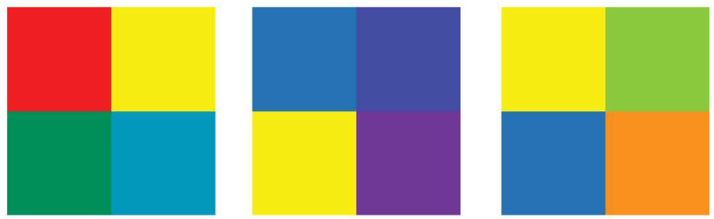

Color remains one of the most challenging and contentious aspects of interior
design. As the painter and color theorist Josef Albers noted, "colors present them-
selves in continuous flux, constantly related to changing neighbors and changing
conditions."
FUNDAMENTALS OF COLOR
Color, fundamentally, is the result of the way in which an object absorbs or reflects the visible
light in the color spectrum. An object that the eye perceives as red absorbs every color except
red, which it reflects. White is often described as the reflection of all colors, while black is
described as the absorption of all colors.
Seeing Color
Color is a physical phenomenon, and the range of colors stretches far beyond what the human eye
is capable of perceiving. At either end of the visible spectrum of light
are the imperceptible infrared and ultraviolet lights. In between is
"human color space." This model is best observed when light is
refracted in a prism and the eye identifies the resultant color wave-lengths-whose number is considered
to
be around 10 million-as a rainbow.
Many factors influence the way we see color in interior
design, but the color in our environments comes from
only two sources:
spectral colored light
pigment ordyestuffs.
These combine with the physics of light and
anatomy to allow us to perceive color, the most emotional
element in interior design.
When the light is warm (contains more yellow and less blue spectral colors), more warm hues are
reflected
and the object appears more yellow-based.
When the light is cool (contains more blue spectrum and less yellow spectrum), colors appear more
bluish.
Orientation, or the direction of natural light, means a slant to the spectrum that affects the way
colors
appear:
East light is clear and bright.
North light is clear and cool.
South light is constant and warm.
West light is hazy and hot.
Season and climate affect color. Winter has fewer warm wavelengths, and summer has more; hazy or
cloudy
conditions screen out warm wavelengths.
Artificial lighting is in some forms nearly full spectrum; these bulbs or lamps are relatively
costly.
Incandescent lighting contains more warm wave-lengths than cool.
Economy fluorescent lighting contains more cool spectral colors than warm.
Warm fluorescent lighting is closer to full-spectral energy distribution light.
Combustion lighting (candlelight and fi relight) contains more warm wavelengths, although the
flickering quality is generally darker, making colors appear darker.
This monochromatic blue scheme gives a clean and precise
look to this sleek modern kitchen. This interior achieves handsome value
distribution. A variety of values from light to dark blues are accented with
creamy white and off-black accents.
Analogous colors are adjacent on the color wheel.
The warm colors in this intimate restaurant setting are yellow-
green on the walls and adjacent colors, yellow and orange are
seen in lighting fi xtures. A glimpse of a red-orange framed
graphic art piece is seen on the right.
This direct-complement scheme is inspired by sun
and sea. The starfish and nautical stripe room is inspired by the
wall art. Pale periwinkle blue and slightly neutralized orange,
with white backgrounds and furniture and carpet the color of
sand combine to make a clean, fresh, and smart color scheme.
RELATIVE COLOR
Color Temperature
Color, inherently, has temperature. Color can be described as being warm (reds, oranges,
yellows) or cold (blues, greens).
Neutrals (whites, grays) also have ranges of temperatures.
Whites can shift in tone from cool to warm, and the change in temperature can enhance and
tie together a color scheme. Grays, too, have temperature. In the Pantone color system, cool
grays tend toward blue, while warm grays gradate toward brown.
Warm and Cool Colors
Neutrals
Neutrals are the families of whites and off-whites, grays, and blacks and off-blacks. Browns and beiges
are
also often considered neutrals, even though they are actually neutralized colored hues.
Whites and Off-Whites
Whites and off-whites give interiors increased visual space. Whitened backgrounds look light,
spacious,
and farther away. Furnishings with hues seem cleaner and crisper surrounded by whites. This approach
is
effective in retail merchandising, where the product to be sold and the clothing of the customers
are
considered part of the color scheme.
Off-whites are produced by adding other neutrals (gray, black, brown) to white or by mixing color
and
neutrals into white. These undertones produce off-whites that may be warm or cool, clean or dirty,
more
neutralized or more colored. Thousands of different off-whites are used in today's interiors. They
are
seen in paints, wall coverings, textiles, floor coverings, and accessories. It is usually wise to
avoid
using off-whites that are not similar in undertone.
For example, a clear yellowish off-white and a dirty neutralized pinkish off-white will be
disturbing;
one will appear as the wrong color. Off-whites with similar warmth, clarity, and color undertones
will
blend harmoniously.
Grays
Grays are achieved by mixing various amounts of black and white, which makes true achromatic
(no-color)
grays. Gray is often an ideal background color against which to show other colors. Grays are easily
colored with other hues to produce a wide variety of pinkish grays, yellowish grays, greenish grays,
brownish grays, and so on.
Colored grays need to be carefully matched or blended to be harmonious, and, like off-white, gray
may
be rendered cool or warm, depending on the undertones. Warm grays can be welcoming and comforting;
cool
grays tend to be cold and uninviting.
Black and Off-Blacks
Blacks and off-blacks give deep, dark value to the set-off neutrals. Black sharpens and adds
richness
to other colors placed next to it.
Black used generously may create a dramatic and theatrical setting, although it might pro-duce
feelings
of depression in some people. Accents of black give richness to interiors.
Off-blacks may be very dark grays or tinted blacks where the hue is barely discernible and can
effectively tie into color schemes.
Browns
Browns and beiges are often favored because of the warm qualities that they bring to an interior.
Browns are achieved by mixing several colors on the color wheel or by neutralizing orange. Often
browns
are introduced into an interior through stained woods, which do not need to match as long as they
harmonize.
Used in large amounts, browns can produce either a cave like coziness or a feeling of oppression.
Browns are often at their peak when good value distribution is employed, utilizing many steps of
lightness from beige to very dark brown.
Designing rooms in neutrals is not a new idea, nor will it readily be a dated one. Many beautiful
interiors
are created using achromatic whites, grays, and blacks, along with the brown/beige group.
These environments make fi ne backgrounds for colorful artwork and accessories. One major advantage of
selecting neutrals for interiors is the flexibility to change color schemes without being locked into a
set
color.
Interiors employing neutrals in every room also allow furnishings to be moved from one room to another.
Shibui principles are exhibited in this pleasing
room. Closely blended, neutralized colors from light above to
dark below combine with interesting textures and patterns to
form long-lived appeal. Small accents of bright color add interest.
The room is peaceful with a sense of appreciation for fine detail.
The law of chromatic distribution is seen here in
larger areas that are neutralized and bright colors reserved for the
smallest applications.
This room is filled with natural light and light neutral colors, giving
a sense of peace and calm. Neutral colors allow the emphasis to be placed on
form and shape and spatial composition.
Contrast of Hue
The simplest of the rules, contrast of hue, functions at the extremes of undiluted colors at the
greatest luminosity. Solutions that use contrast of hue have a visual vibrancy and playful
intensity.
This contrast always requires three colors, and it is important to note that the effect lessens as
the
colors move away from Itten's three primaries.

contrast of hue to great effect. Colors
playfully interact through the space; lime-yellows, blues, and reds in the felt poppy
figures lift the environment from staid office to a lively series of colored spaces.
Light-Dark Contrast
Light-dark contrast exists in the relationship between black and white-as well as in the range of
grays
that exist between them. Itten saw gray as
an essentially achromatic color, shifting in relationship depending on the colors that surround
it.The
key to this contrast is a deeper understanding of shading and its effects.
A showroom for the textile manufacturer
Kvadrat in Stockholm eschews the typical neutral background for display in favor of
an innovative tile system.The move from light to dark symbolizes a
shift in function-from open showrooms to more intimate meeting spaces and offices.
Cold-Warm Contrast
Particular colors can affect the relative comfort
of a room at a specific temperature. In fact, a perceptual change in physical temperature occurs
in spaces when they are painted in cold versus warm colors. For Itten, cold-warm contrasts were
highly versatile in their expressive powers.
a cold-warm contrast to distinguish the different zones of the space.
The bar is surfaced in a cool blue that acts as a functional highlight against the warm,
intimate spaces that surround it.
Complementary Contrast
Complements occur when two hues are mixed
and the result is a neutral gray-black. (In additive color systems, the result will be white.) Every
color within a color system has its complement; finding a complementary color is a simple matter
of selecting opposite colors on Itten's wheel. In complementary contrasts, colors balance each
other.
the Maple Leaf lounge, usesd complementary contrast in a relatively muted palette
to draw attention to specific moments within the spatial sequence.
Simultaneous Contrast
Simultaneous contrast occurs as an optical illusion: The complementary color of an applied
color is not itself objectively present, but appears
to be visible. Simultaneous contrast requires an adjacent neutral color, or any other color that is
not complementary. The longer a background is viewed, especially with more luminous colors, the
greater the intensity of the simultaneous effects.
Simultaneous contrasts are difficult to capture photographically. light against
painted color to suggest additional colors.
As the sun changes position and color over the course of a day,
new combinations appear.
Contrast of Saturation
Color can be diluted via four methods to obtain different results: Adding white makes a color
cooler;
adding black reduces the overall vitality of a color and renders it more subdued and, in the absence
of light, quite dark; adding gray reduces the intensity of a color and tends to neutralize it;
adding
the complementary color produces various effects, depending on the intensity of the colors being
mixed,
their relative temperature, and their hue.
A library uses a natural palette that lends itself to a contrast of
saturation. Various shades of browns and yellows allow this intervention to fit
nicely within the classical architecture it occupies. Accents of cooler colors in the
existing architecture also contribute to the
scheme's success.
Contrast of Extension
Contrast of extension refers to the relative force that a color exerts in relation to the other
colors
in a system. Depending on the hue and value of a color, careful consideration must be taken to
balance the addition of another color. The result is a ratio that harmonizes the colors in play. Of
all the contrast rules, this is perhaps the most
subjective.
Balance is the fundamental principle behind
the contrast of extension. color balance effectively-mixing paint, materials, and accessories in a
complex sequence
that achieves a sense of equilibrium.